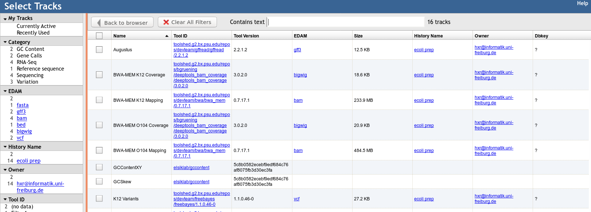

JBrowse
Contributors
Authors: 
 Helena Rasche
Helena Rasche Saskia Hiltemann
Saskia Hiltemann
last_modification Published: Jan 10, 2020
last_modification Last Updated: Aug 22, 2022
JBrowse for Genomics Visualisation
What is JBrowse
.pull-left[
- Interactive genome browser
- HTML5 / Javascript
- Process data + copy directory to a webserver
- Can be deployed to apache/nginx, S3 buckets, etc.
- Many plugins available for
- Themes
- Datatype support (mafviewer, agp_parser)
- Third party data integration (GA4GH, MyVariantViewer)
- Visualisations (GC Content track, Sashimi for RNAseq)
- More ]
.pull-right[
 ]
]
JBrowse in Galaxy
- Tool that produces a JBrowse instance (client side code + processed data)
- Workflow compatible
- Covers most of the possibilities of JBrowse
- Supports many Galaxy datatypes:
- GFF3 / GBK /BED
- BAM (SAM)
- (big)Wig
- Blast XML
- VCF
- REST/SPARQL endpoints
- Complex JBrowse made easy (Thanks Galaxy!)
Built in Provenance Tracking
- “ComboTrackSelector” supports attaching metadata to tracks + filtering
- We attached Galaxy metadata
- Dataset Creator
- Dataset Job Parameters
- Tool + Version
- Date
- Can “build on top of” existing JBrowses, adding more data. Complete history tracked.

Why is this Necessary?
- JBrowse allows you to present Galaxy analysis workflows in a single visualisation
- Researchers generally understand genome browsers
- When annotation, not just visualisation, is needed, the JBrowse instances can be sent to Apollo
- Apollo allows for collaborative genome annotation and curation
- Check out the Apollo tutorials for more details: prokaryotes - eukaryotes
Why do you need this?
- You are running genome annotation or genomic data analysis workflows
- Researchers need more visual outputs than tables of data
- Datasets can be more valuable visualised together, rather than as separate lines in a report
Thank you!
This material is the result of a collaborative work. Thanks to the Galaxy Training Network and all the contributors! Tutorial Content is licensed under
Creative Commons Attribution 4.0 International License.
Tutorial Content is licensed under
Creative Commons Attribution 4.0 International License.